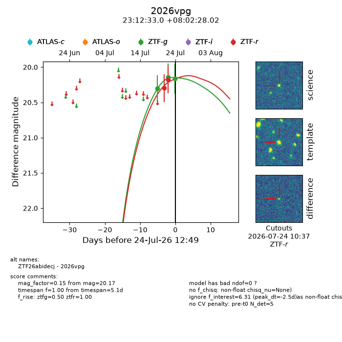
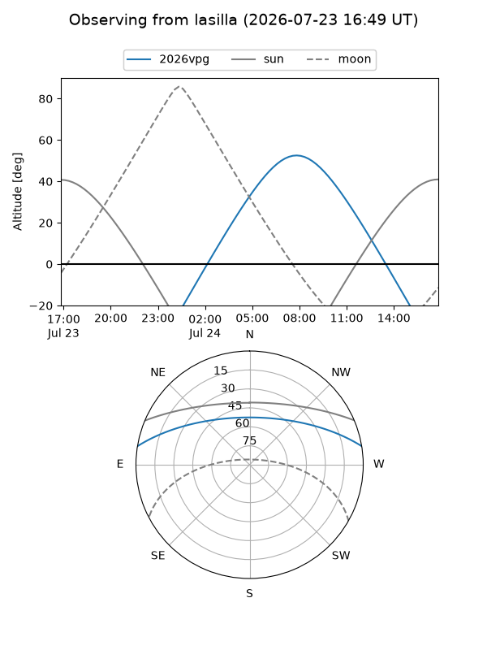
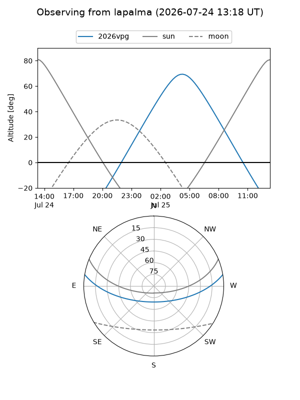
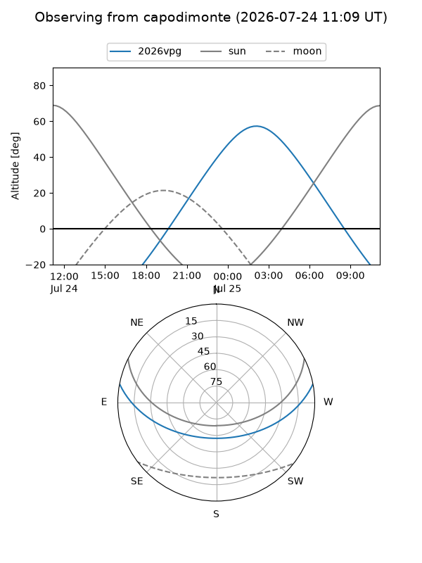
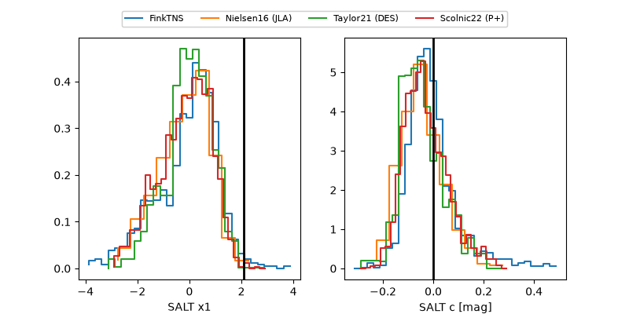

2026vpg
Target 2026vpg at 2026-07-24 12:51
Aliases and brokers:
FINK-ZTF: ztf.fink-portal.org/ZTF26abidecj
Lasair-ZTF: lasair-ztf.lsst.ac.uk/objects/ZTF26abidecj
ALeRCE-ZTF: alerce.online/object/ZTF26abidecj
YSE-PZ: ziggy.ucolick.org/yse/transient_detail/2026vpg
TNS name: wis-tns.org/object/2026vpg
Direct TNS query: direct search
alt names
ZTF26abidecj (ztf,fink_ztf)
2026vpg (tns,yse)
Coordinates:
equatorial (ra, dec) = 348.1376,+8.04112
equatorial (HMS+DMS) = 23:12:33.02,+08:02:28.02
galactic (l, b) = (85.1712,-47.44989)
Flags:
peak dt: -2.5
Photometry:
last ztfg=20.17, ztfr=20.18
3 ztfg, 2 ztfr detections
Lightcurve

Visibility



Additional plots
